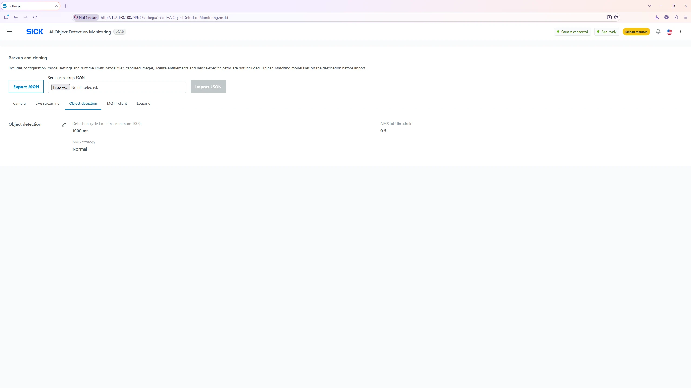

Object Detection Settings
Tune inference scheduling and duplicate-box suppression. Adjust carefully because performance and detection quality can change.

Parameter reference
| Setting | Meaning |
|---|---|
| Cycle time (ms) | Configured interval between model inference attempts. Minimum 1,000 ms; optimized 1,000 ms. Actual response can be slower because of model execution and device load. |
| NMS threshold | Overlap threshold for filtering competing bounding boxes, from 0 to 1. Optimized 0.50. |
| NMS strategy: NORMAL | Standard duplicate-box suppression. Optimized selection. |
| NMS strategy: CLASS_AWARE | Suppression takes predicted classes into account, which can preserve overlapping boxes from different classes. |
| NMS strategy: NONE | Disables NMS; overlapping duplicate detections can remain. |
What happens after an inference
Each model produces candidate bounding boxes with predicted classes and confidence values. The system applies the model’s confidence threshold, optionally suppresses duplicate boxes using NMS and applies recognition/holding timing. Only the resulting recognized detections are counted and published. The detection cycle is not a guarantee of exactly one result per second.
Tuning procedure
- Use an appropriate trained model and representative test object/scene.
- Start with NMS NORMAL, threshold 0.50 and cycle 1,000 ms.
- If duplicate boxes occur, review NMS; if missed objects occur, review lighting, training coverage and the per-model confidence threshold first.
- Save and reload, then compare the same test scene before and after changes.
Per-model Recognition time and Holding time are not configured here; adjust them from Network Models → Edit.